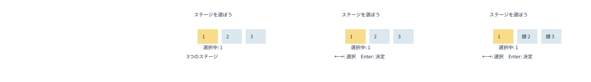
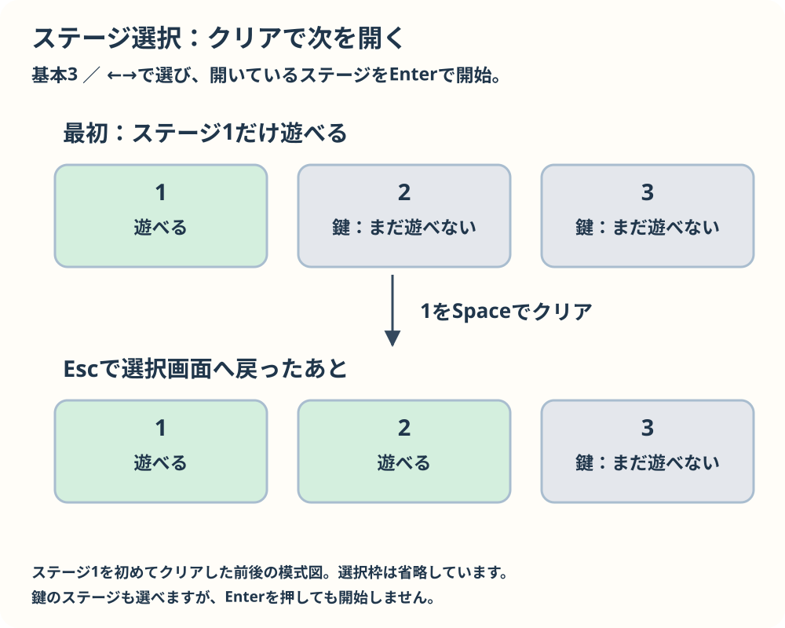

ステージ選択を作る
始める前に
ZIPを展開してできたフォルダーでindex.htmlを開きます。ZIPにはひな型の3ファイルが入っています。
WindowsでZIPを展開する（動画）
変更前を探し、変更後に置き換えて保存し、index.html を開き直します。
ステップ 1：3つのステージを表示する
このステップの見本を図で見る
x=140+1×130=270
初期選択は1。黄色で描く。
x=270,400,530、unlocked=3
この段階では3つとも開いている。
ゲーム画面とコードの前後を見る

このステップの見本
この行を足す前 変わったコードの一例（script.js）
ctx.fillStyle = selected === i ? "#f8dc8b" : "#dce8ef"; ctx.fillRect(140 + i * 130, 160, 110, 80);
見本で確かめること
3つの番号が表示されます。
目標
3つのステージを表示する。
小さな作業
上から順に作業します。目印を探し、その下のコードを書きます。
画面とステージ番号を覚える
作業用の script.js の先頭近くで、次の目印のすぐ下に追加します。
目印
const ctx = canvas.getContext("2d");追加するコード
let state, selected, unlocked;let は後で値を変えられる変数を作ります。state は画面、selected は選択中、unlocked は選べる最後の番号です。
選択画面から始める
start() から update() の閉じ波括弧までで、次の範囲を置き換えます。
置き換える範囲
function start() {
}
function update() {
}置き換えるコード
function start() {
state = "select"; selected = 1; unlocked = 3;
}
function update() {
}= は右の値を左へ入れる代入です。選択画面から始め、1 を選択し、ここでは 3 まで選べます。
画面ごとの表示を用意する
draw() の画面を消す行から gameLoop() の先頭行までで、次の範囲を置き換えます。
置き換える範囲
ctx.clearRect(0, 0, canvas.width, canvas.height);
}
function gameLoop() {置き換えるコード
ctx.clearRect(0, 0, canvas.width, canvas.height);
ctx.fillStyle = "#26334a"; ctx.font = "26px sans-serif";
if (state === "select") {
ctx.fillText("ステージを選ぼう", 250, 90);
} else if (state === "playing") ctx.fillText("ステージ " + selected + " Space: クリア", 160, 180);
else ctx.fillText("クリア！ Esc: 選択へ", 200, 180);
}
function gameLoop() {if は条件が成り立つときだけ実行し、=== は同じかの比較です。選択中・ゲーム中・それ以外で表示を分けます。切り替える操作は次のステップで作ります。
3つのステージを描く
選択画面のタイトルの下で、次の目印のすぐ下に追加します。
目印
ctx.fillText("ステージを選ぼう", 250, 90);追加するコード
for (let i = 1; i <= 3; i++) {
ctx.fillStyle = selected === i ? "#f8dc8b" : "#dce8ef"; ctx.fillRect(140 + i * 130, 160, 110, 80);
}for は i を 1 から始め、i <= 3 の間、i++ で 1 ずつ増やすので 3 回描きます。条件 ? A : B で選択中の色を変えます。四角の横位置は 270、400、530 です。
ステージの番号と鍵を描く
for の四角を描く行の下で、次の目印のすぐ下に追加します。
目印
ctx.fillStyle = selected === i ? "#f8dc8b" : "#dce8ef"; ctx.fillRect(140 + i * 130, 160, 110, 80);追加するコード
ctx.fillStyle = "#26334a"; ctx.fillText(i <= unlocked ? String(i) : "鍵 " + i, 165 + i * 130, 210);<= は以下の比較です。選べる最後の番号以下なら String(i) で番号を文字にし、それ以外は鍵付きの表示にします。
選択中の番号を表示する
for の閉じ波括弧の下で、次の目印のすぐ下に追加します。
目印
ctx.fillStyle = "#26334a"; ctx.fillText(i <= unlocked ? String(i) : "鍵 " + i, 165 + i * 130, 210);
}追加するコード
ctx.fillText("選択中: " + selected, 300, 270);+ で文字と選択番号をつないで表示します。
ステージ数を表示する
選択中の表示の下で、次の目印のすぐ下に追加します。
目印
ctx.fillText("選択中: " + selected, 300, 270);追加するコード
ctx.fillText("3つのステージ", 210, 320);ステージが 3 つあることを表示します。
保存して作業用の index.html を再読み込みし、ステージ 1〜3 と「選択中: 1」が表示されることを確かめます。操作は次に作ります。
保存後の確認
保存してゲーム画面を更新する（動画）
index.html を再読み込みします。3つの番号が表示されます。 この段階の見本を開く
小さな練習
ボタンの色を変えます。 練習後はコードを元に戻してください。
ステップ 2：ステージを選んで遊ぶ
このステップの見本を図で見る
selected <= unlocked → playing
開いているステージを開始。
playing かつ Space → clear
クリア画面に切り替える。
clear かつ Escape → select
同じ選択番号で一覧へ戻る。
ゲーム画面とコードの前後を見る
このステップの見本
この行を足す前 変わったコードの一例（script.js）
if (event.key === "ArrowLeft") { event.preventDefault(); selected = Math.max(1, selected - 1); }
見本で確かめること
ステージを選んでSpaceでクリアし、Escで戻ります。
目標
ステージを選んで遊ぶ。
小さな作業
上から順に作業します。目印を探し、その下のコードを書きます。
選択操作を案内する
draw() のステージ数の表示で、次の範囲を置き換えます。
置き換える範囲
ctx.fillText("3つのステージ", 210, 320);置き換えるコード
ctx.fillText("←→: 選択 Enter: 決定", 210, 320);左右キーで選び、Enter で決める操作を表示します。
キー入力を受け取る
draw() の閉じ波括弧から gameLoop() の先頭行までで、次の範囲を置き換えます。
置き換える範囲
}
function gameLoop() {置き換えるコード
}
window.addEventListener("keydown", event => {
if (event.repeat) return;
if (event.key.toLowerCase() === "r") { start(); return; }
});
function gameLoop() {keydown はキーを押したときに起きます。繰り返し入力を除き、小文字にしたキーが R なら start() で最初に戻します。
選択画面の操作を用意する
キー入力処理の R の判定の下で、次の目印のすぐ下に追加します。
目印
if (event.key.toLowerCase() === "r") { start(); return; }追加するコード
if (state === "select") {
}選択画面のときだけ行う処理をこの波括弧の中に追加します。
左キーで番号を下げる
キー入力処理の選択画面の判定の中で、次の目印のすぐ下に追加します。
目印
if (event.key.toLowerCase() === "r") { start(); return; }
if (state === "select") {追加するコード
if (event.key === "ArrowLeft") { event.preventDefault(); selected = Math.max(1, selected - 1); }左キーならスクロールを防ぎ、番号を 1 減らします。Math.max で 1 未満にならないようにします。
右キーで番号を上げる
左キーの判定の下で、次の目印のすぐ下に追加します。
目印
if (event.key === "ArrowLeft") { event.preventDefault(); selected = Math.max(1, selected - 1); }追加するコード
else if (event.key === "ArrowRight") { event.preventDefault(); selected = Math.min(3, selected + 1); }右キーなら番号を 1 増やし、Math.min で 3 を超えないようにします。
選べるステージを開始する
右キーの判定の下で、次の目印のすぐ下に追加します。
目印
else if (event.key === "ArrowRight") { event.preventDefault(); selected = Math.min(3, selected + 1); }追加するコード
else if (event.key === "Enter" && selected <= unlocked) state = "playing";&& は両方の条件が必要という意味です。Enter を押し、選択番号が unlocked 以下ならゲームを始めます。
Spaceでクリアする
Enter の判定と選択画面の閉じ波括弧で、次の範囲を置き換えます。
置き換える範囲
else if (event.key === "Enter" && selected <= unlocked) state = "playing";
}置き換えるコード
else if (event.key === "Enter" && selected <= unlocked) state = "playing";
} else if (state === "playing" && event.key === " ") {
event.preventDefault(); state = "clear";
}ゲーム中に Space を押すとスクロールを防ぎ、クリア画面へ切り替えます。
Escで選択画面に戻る
クリア画面にする行と閉じ波括弧で、次の範囲を置き換えます。
置き換える範囲
event.preventDefault(); state = "clear";
}置き換えるコード
event.preventDefault(); state = "clear";
} else if (state === "clear" && event.key === "Escape") state = "select";クリア画面で Esc を押すと選択画面に戻ります。
保存して再読み込みし、左右キーで選び、Enter で開始し、Space でクリア、Esc で選択画面に戻ることを確かめます。
保存後の確認
ステージを選んでSpaceでクリアし、Escで戻ります。 この段階の見本を開く
小さな練習
クリアの文章を変えます。 練習後はコードを元に戻してください。
ステップ 3：クリアで次を開く
このステップの見本を図で見る
unlocked = 1
1だけ遊べる。
max(1,min(3,1+1)) = 2
Escで戻ると2の鍵が外れる。
max(2,min(3,2+1)) = 3
次は3まで遊べる。
ゲーム画面とコードの前後を見る
このステップの見本
event.preventDefault(); state = "clear";
変わったコードの一例（script.js）event.preventDefault(); state = "clear"; unlocked = Math.max(unlocked, Math.min(3, selected + 1));
見本で確かめること
1をクリアして戻ると2の鍵が外れます。
目標
クリアで次を開く。
小さな作業
上から順に作業します。目印を探し、その下のコードを書きます。
最初はステージ1だけ選べるようにする
start() の状態設定で、次の範囲を置き換えます。
置き換える範囲
state = "select"; selected = 1; unlocked = 3;置き換えるコード
state = "select"; selected = 1; unlocked = 1;最初の unlocked を 1 にするので、2 と 3 は鍵付きになり開始できません。
クリア後に次のステージを開く
Space でクリアする行で、次の範囲を置き換えます。
置き換える範囲
event.preventDefault(); state = "clear";置き換えるコード
event.preventDefault(); state = "clear"; unlocked = Math.max(unlocked, Math.min(3, selected + 1));Math.min で次の番号を 3 以下にし、Math.max で今の解放済み番号より小さくならないようにします。例えば 1 をクリアすると 2 が選べます。

最初に遊べるのはステージ1だけです。1をクリアすると2が開きます。Escで選択画面に戻り、次のステージを選びましょう。
1の初回クリア前後を比較。unlocked=1→2、3は未解放。鍵の項目は選択可能だが開始不可。
保存して再読み込みし、最初は 1 だけが選べ、1 をクリアすると 2 が開くことを確かめます。
保存後の確認
1をクリアして戻ると2の鍵が外れます。 この段階の見本を開く
小さな練習
開く条件を変え、表示も確かめます。 練習後はコードを元に戻してください。
自分のゲームに組み込むには
state、selected、unlockedと選択画面の描画・入力を移します。
Enterで選んだ番号を自分のstartGame(selected)へ渡し、クリア時にunlockedを更新します。
この欄のstartGame・updateGame・drawGameは、自分のゲーム側の開始・更新・描画の関数名の例です。自分の関数名に合わせて読み替えます。gameLoopは増やさず、既存のstart・update・drawから必要な処理を呼び、再挑戦では持ち込んだ状態や入力も初期化します。